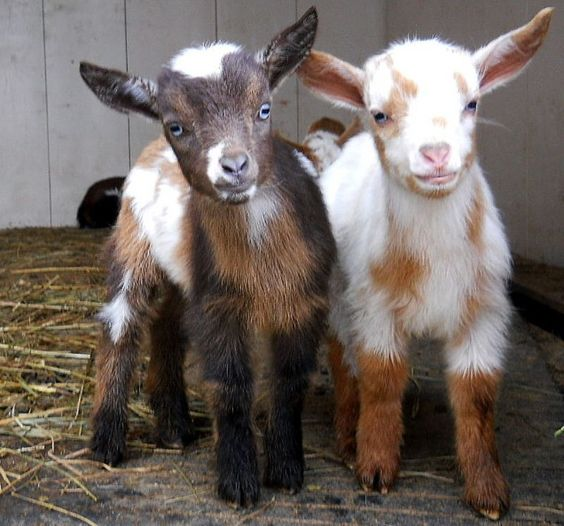
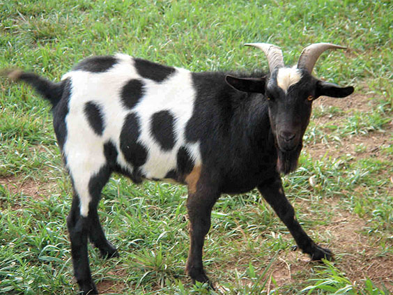
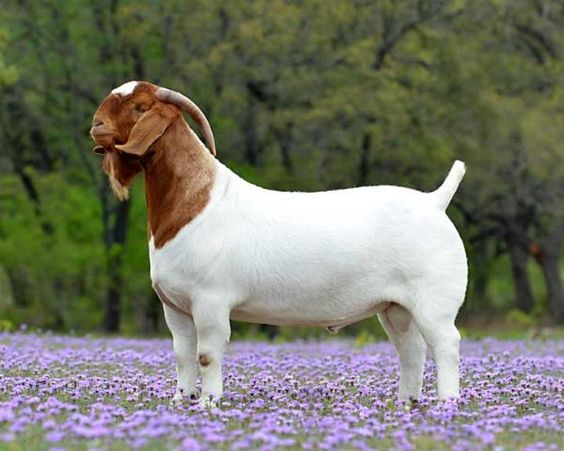

Pygmy

They are of African origination having a small body structure. Nowadays, people are usually raising pygmy goats for meat but they are basically bred as pets. They can be raised all year round.
They are the oldest breed of dairy goats having medium-sized body. They come in various colors ranging from fawn to dark chocolate brown with white marks on the body. They are commonly raised for producing milk which is usually used to make cheese. However, their milk contains only 3.3% of butterfat.
Tennessee Fainting Goats

These goats have various names due to their unique characteristics. The most popular ones are fainting or nervous goats named after their genetic imbalance. Fainting goats are more properly called Myotonic goats. The breed is best known because its muscles momentarily freeze for several seconds when the goat feels frightened. Nevertheless, they not only provide generous amount of meat but also fleece.
Boer

They are South African based goats with long, hanging ears and Roman nose. They have white body with colored head and backward curved horns. However, they have a gentle built but are strong and vigorous. They mostly breed in September and end in January.